Kai Mäder
Tonmeister · Berlin & Linz
Über mich
Zwischen Orchestergraben,
Produktionsplanungen und Regieraum
Schon während meines Musik-Studiums 2000 habe ich als Tonmeister gearbeitet – im Studio und auf der Bühne, bei Aufnahmen, Musicals, Opern, Konzerten und TV-Produktionen in Deutschland, Österreich und der Schweiz.
Seit 2010 liegt mein Schwerpunkt im Musiktheater: Nach Stationen am Theater Magdeburg und am Landestheater Neustrelitz leite ich seit 2022 die Abteilung Ton und Video am Musiktheater Linz.
Von der ersten Konzeptionsidee über die technische Planung bis hin zur Vorstellung –
mit Erfahrung, Sorgfalt und künstlerischem Feingefühl.
Leistungen
Was ich für Sie mache
Musiktheater & Oper
Tonregie, Mikrofonierung und Beschallung für Musical, Oper und Theater – im Repertoire wie auf Tour.
Sounddesign & Postproduktion
Eigene Klangwelten für Musical- und Theaterproduktionen sowie Playbacks, Zuspielungen und Nachbearbeitung für Bühne und Video.
Live Sound & Konzert
FOH- und Monitormischung für Konzerte, Festivals, Galas und Messen, inklusive Systemplanung.
Recording, Mix & Mastering
Aufnahmen von Klassik bis Rock, im Studio oder vor Ort, bis zum fertigen Master.
Musiktheater Linz
Produktionen
Als Leiter der Abteilung Ton und Video am Musiktheater Linz betreue ich die Produktionen des Hauses wie Musical, Gastspiele, Oper, Operette und Tanz – von der Planung bis zur Vorstellung.
Musical
- Jagged Little PillAlanis Morissette & Glen BallardDeutschsprachige Erstaufführung
- Roald Dahl’s MatildaTim Minchin
- Come From AwayIrene Sankoff & David HeinÖsterreichische Erstaufführung
- Die Mitte der WeltSarah Taylor EllisUraufführung
- Shrek – Das MusicalJeanine Tesori
- Ein Teelöffel FeenstaubDisney-SongsMusical in Concert
- Wonderful TownLeonard Bernstein
- RentJonathan Larson
- Something Rotten!Wayne & Karey KirkpatrickDeutschsprachige Erstaufführung
- Sweeney ToddStephen Sondheim
- WonderlandFrank WildhornEuropäische Erstaufführung
- Die KöniginnenThomas ZaufkeUraufführung
- Das Licht auf der PiazzaAdam GuettelÖsterreichische Erstaufführung
- School of RockAndrew Lloyd WebberDeutschsprachige Erstaufführung
- Strike Up the BandGeorge GershwinÖsterreichische Erstaufführung
- TootsieDavid YazbekÖsterreichische Erstaufführung
- AnastasiaStephen FlahertyÖsterreichische Erstaufführung
- BÄM! 10 Jahre Musicalensemble Linz
- Catch Me If You CanMarc Shaiman
- Fun HomeJeanine TesoriDeutschsprachige Erstaufführung
- Natascha, Pierre und der große Komet von 1812Dave MalloyEuropäische Erstaufführung
Oper & Operette
- Die CsárdásfürstinEmmerich Kálmán
- LohengrinRichard Wagner
- VanishingsLeoš Janáček / Thomas Adès
- Adam und EvaMike SvobodaÖsterreichische Erstaufführung
- Don PasqualeGaetano Donizetti
- GormenghastIrmin Schmidt
- Heute Nacht, FräuleinWalter KaufmannUraufführung
- Katja KabanowaLeoš Janáček
- MaditaViktor ÅslundUraufführung
- Der RosenkavalierRichard Strauss
- TurandotGiacomo Puccini
- Wiener BlutJohann Strauss
- Der zerbrochene Krug / Des Esels SchattenViktor Ullmann / Richard Strauss
- Der fliegende HolländerRichard Wagner
- Die gerissene FüchsinLeoš Janáček
- Guillaume TellGioachino Rossini
- Die heilige EnteHans Gál
- Madama ButterflyGiacomo Puccini
- PaganiniFranz Lehár
- Papageno und die ZauberflöteWolfgang Amadé Mozart
- Unsere Kinder der NachtHelmut JasbarUraufführung
- Il viaggio / Das Licht vom anderen HausAlois BröderUraufführung
- Die wunderbare Wirkung der NaturGiuseppe Scarlatti
- Die ZauberflöteWolfgang Amadé Mozart
- Il barbiere di SivigliaGioachino Rossini
- Benjamin ButtonReinhard FebelUraufführung
- Cavalleria rusticana / PagliacciPietro Mascagni / Ruggero Leoncavallo
- Der FindlingFranz HummelUraufführung
- Die FledermausJohann Strauss
- Der FreischützCarl Maria von Weber
- La JuiveFromental Halévy
- Die Prinzessin auf der ErbseErnst Toch
- Zur gold’nen LiebeRalph Benatzky
- La forza del destinoGiuseppe Verdi
- Gräfin MarizaEmmerich Kálmán
- Die Meistersinger von NürnbergRichard Wagner
- MelusinaConradin Kreutzer
- RinaldoGeorg Friedrich Händel
- Die tote StadtErich Wolfgang Korngold
- La Tragédie de CarmenMarius Constant nach Georges BizetÖsterreichische Erstaufführung
- Wanda WalfischAnna WenzelÖsterreichische Erstaufführung
Tanz
- Divine Matter / Zeichen & WunderUraufführung
- Amor & Psyche?
- Preisträger-Choreografie Hannover
- Shakespeare’s DreamUraufführung
- Fall / Orbo NovoÖsterreichische Erstaufführung
- Living Room
- Lovetrain 2.0
- Labo Traces
- MemoryhouseUraufführung
- Romeo und Julia
- Dornröschen
- Neuzeit
- Traumzeit
Gastspiele
- Anna Netrebko
- Canadian Brass
- Jonas Kaufmann & Helmut Deutsch
- Avec
- Bela B Felsenheimer
- Blechschaden
- Blonder Engel & die Kapelle zum guten Ton
- Gansch & Roses
- Günther Groissböck & Florian Krumpöck
- Johann Strauss Ensemble
- Josef Hader
- Julia Lezhneva & Kammerorchester Basel
- Kernölamazonen
- Klenk + Reiter
- London Brass
- Marco Wanda
- Max Raabe & Palast Orchester
- Michael Maertens & Katja Kolm
- Nelio Biedermann
- Nicholas Ofczarek & Musicbanda Franui
- Der Nino aus Wien & Milan Begović
- Peter Filzmaier & Armin Wolf
- Piotr Beczała & Bruckner Orchester Linz
- Pro Brass
- Rolando Villazón & Lautten Compagney Berlin
- Romantic Slivo & The Burning Hearts
- Sigrid Horn & Ernst Molden
- Die Zebras
- Andreas Schager & Bruckner Orchester Linz
- Elīna Garanča
- Erwin Schrott
- Fatma Said
- Agnes Palmisano, Daniel Fuchsberger & Andreas Teufel
- Asmik Grigorian & Bruckner Orchester Linz
- Bernhard Murg & Stefano Bernardin
- Betty & das Blumenkartell
- Böck | Gasselsberger | Linecker
- Christoph Moschberger & Da Blechhauf’n
- Felix Kramer
- Florian Klenk & Florian Scheuba
- Gesangskapelle Hermann
- Gotho Griesmeier & Manuela Kloibmüller
- Jakub Józef Orliński & Il Pomo d’Oro
- Joyce DiDonato
- Lukas Resetarits
- Maschek
- Max Müller
- Mira Lu Kovacs & Clemens Wenger
- Original Woodstock Musikanten
- Rubey & Schwarz
- Sanne Mieloo
- Science Busters
- Stella Grigorian, Karl Markovics & Béla Korény
- Stermann & Grissemann
- Thomas Gansch & Alegre Corrêa
- Ulrich Drechsler
- Upper Austrian Jazz Orchestra & Randy Brecker
- 5/8erl in Ehr’n & Jazzorchester Vorarlberg
- 5K HD
- Anton Bruckner Privatuniversität
- Béla Korény, Karl Markovics & Julia Stemberger
- Bernhard Moshammer
- Daniel Glattauer
- Dirk Stermann
- Florian Aigner & Martin Moder
- Gansch / Paul / Fuchsberger / Hornek
- German Brass
- Ina Regen
- Jelena Popržan Quartett
- Jo Strauss & Band
- Juan Diego Flórez & Bruckner Orchester Linz
- Louie’s Cage Percussion
- Michael Ostrowski
- Paul Pizzera, Gabi Hiller & Philipp Hansa
- Phil Blech
- Regula Mühlemann & Kammerorchester Basel
- Rudi Habringer & Rudi Müllehner
- Stefano Bernardin
- Die Tagespresse
- Thomas Quasthoff & Band
- Woodstock Allstar Band
Aufnahmen


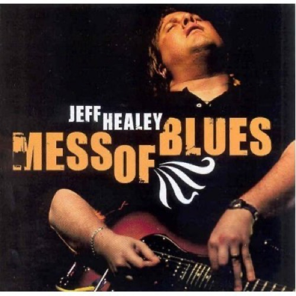
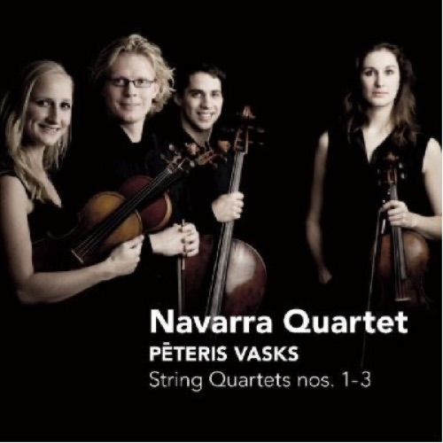

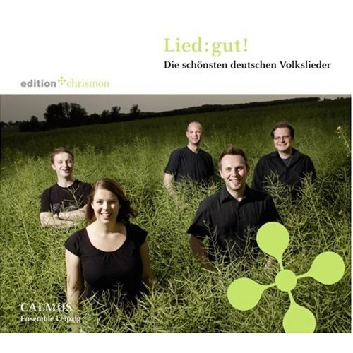

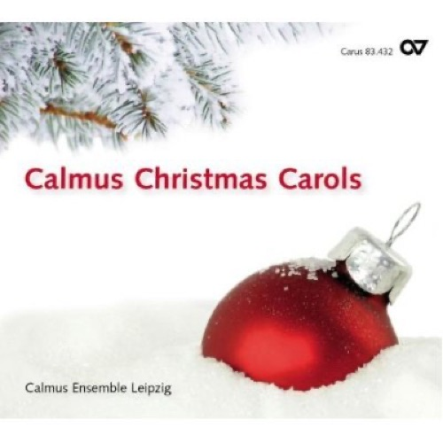


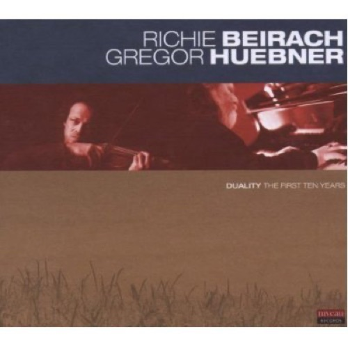

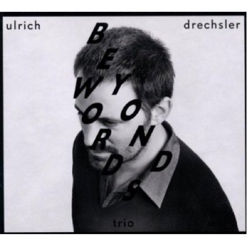
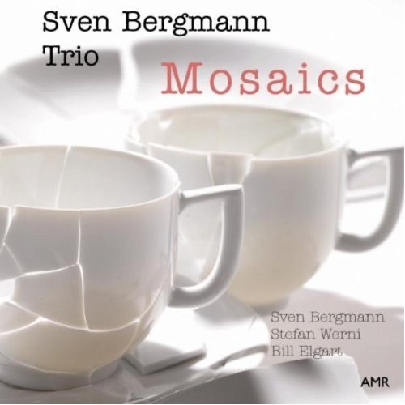


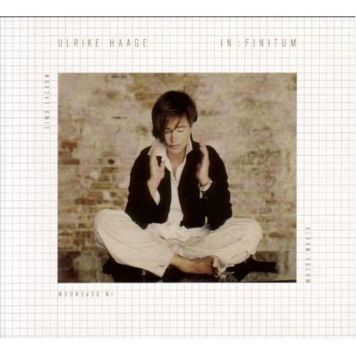
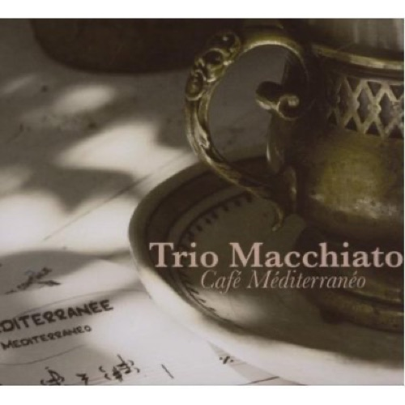
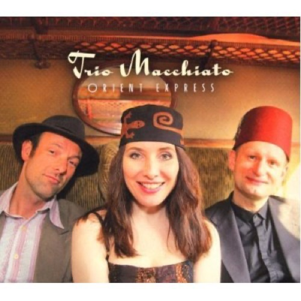


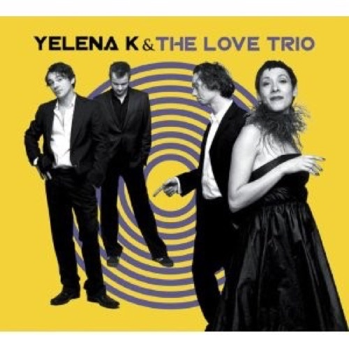
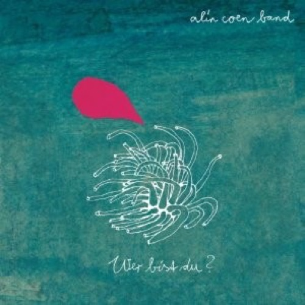


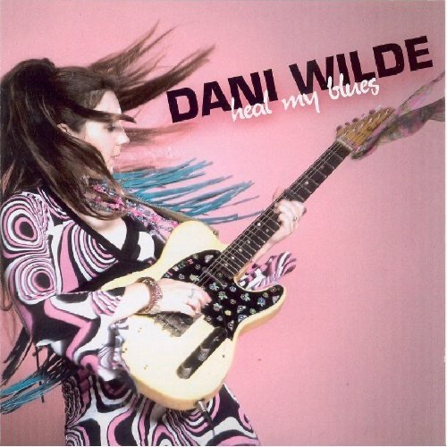

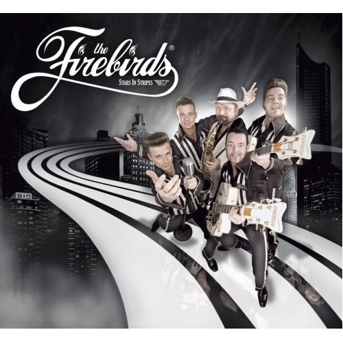


Hören & Sehen
Videos
Die Videos werden erst nach Klick von YouTube bzw. Vimeo geladen. Dabei werden Daten an diese Anbieter übertragen – siehe Datenschutz weiter unten.
Kontakt
Lassen Sie uns über Ihr Projekt sprechen
Ob Sounddesign für ein Musical, Tonregie im Theater, ein Konzert oder eine Albumaufnahme – erzählen Sie mir von Ihrem Projekt. Ich freue mich auf Ihre Nachricht.
- info@kaima.at
- Telefon
- +43 664 1465124
- Studio
- Berlin-Kreuzberg
Rechtliches
Impressum
Angaben gemäß § 5 DDG
Kai Mäder
Gneisenaustr. 65
10961 Berlin
E-Mail: info@kaima.at
Telefon: +43 664 1465124
Steuernummer: 14/429/03586
Verantwortlich für den Inhalt
Kai Mäder, Anschrift wie oben.
Haftung für Inhalte
Die Inhalte dieser Seiten wurden mit größter Sorgfalt erstellt. Für die Richtigkeit, Vollständigkeit und Aktualität der Inhalte kann ich jedoch keine Gewähr übernehmen. Als Diensteanbieter bin ich für eigene Inhalte auf diesen Seiten nach den allgemeinen Gesetzen verantwortlich.
Haftung für Links
Diese Website enthält Links zu externen Websites Dritter, auf deren Inhalte ich keinen Einfluss habe. Für die Inhalte der verlinkten Seiten ist stets der jeweilige Anbieter oder Betreiber verantwortlich. Zum Zeitpunkt der Verlinkung waren keine rechtswidrigen Inhalte erkennbar. Bei Bekanntwerden von Rechtsverletzungen werden derartige Links umgehend entfernt.
Urheberrecht
Die auf dieser Website veröffentlichten Inhalte, Fotos, Tondokumente und Videosequenzen unterliegen dem deutschen Urheberrecht. Die Rechte an den abgebildeten Albumcovern liegen bei den jeweiligen Künstlern und Labels. Vervielfältigung, Bearbeitung und Verbreitung außerhalb der Grenzen des Urheberrechts bedürfen der schriftlichen Zustimmung des jeweiligen Rechteinhabers.
Werbung
Der Nutzung der im Impressum veröffentlichten Kontaktdaten zur Übersendung nicht ausdrücklich angeforderter Werbung wird hiermit widersprochen.
Datenschutzerklärung
1. Verantwortlicher
Kai Mäder
Gneisenaustr. 65, 10961 Berlin
E-Mail: info@kaima.at
2. Das Wichtigste in Kürze
Diese Website verwendet keine Cookies, keine Analyse- oder Tracking-Tools und keine Schriftarten oder Skripte von Drittanbietern. Daten an YouTube oder Vimeo werden nur übertragen, wenn Sie ein Video aktiv per Klick starten.
3. Hosting über GitHub Pages
Diese Website wird bei GitHub Pages gehostet, einem Dienst der GitHub Inc., 88 Colin P. Kelly Jr. St., San Francisco, CA 94107, USA. Beim Aufruf der Seiten verarbeitet GitHub technisch notwendige Daten, insbesondere Ihre IP-Adresse, Datum und Uhrzeit des Zugriffs, die aufgerufene Seite sowie Browser- und Betriebssysteminformationen (Server-Logfiles). Dies dient der sicheren und stabilen Auslieferung der Website.
Rechtsgrundlage ist mein berechtigtes Interesse an einer zuverlässigen Darstellung der Website (Art. 6 Abs. 1 lit. f DSGVO). Eine Übermittlung in die USA ist möglich; GitHub ist unter dem EU-US Data Privacy Framework zertifiziert. Weitere Informationen: Datenschutzerklärung von GitHub.
4. Kontakt per E-Mail oder Telefon
Wenn Sie mich per E-Mail oder Telefon kontaktieren, verarbeite ich Ihre Angaben (z. B. Name, E-Mail-Adresse, Telefonnummer, Inhalt der Anfrage) ausschließlich zur Bearbeitung Ihrer Anfrage. Rechtsgrundlage ist Art. 6 Abs. 1 lit. b DSGVO (Anbahnung oder Durchführung eines Vertrags) bzw. Art. 6 Abs. 1 lit. f DSGVO. Die Daten werden gelöscht, sobald sie nicht mehr erforderlich sind und keine gesetzlichen Aufbewahrungspflichten entgegenstehen.
5. Eingebettete Videos (YouTube, Vimeo)
Auf dieser Website können Videos von YouTube (Google Ireland Limited, Gordon House, Barrow Street, Dublin 4, Irland) und Vimeo (Vimeo.com, Inc., 330 West 34th Street, New York, NY 10001, USA) abgespielt werden. Die Videos werden erst geladen, wenn Sie auf das jeweilige Vorschaubild klicken. Erst dann wird eine Verbindung zu den Servern des Anbieters hergestellt und es werden Daten wie Ihre IP-Adresse übertragen. YouTube-Videos werden im erweiterten Datenschutzmodus (youtube-nocookie.com) eingebunden, Vimeo-Videos mit dem Parameter „Do Not Track“.
Rechtsgrundlage ist Ihre Einwilligung durch den Klick (Art. 6 Abs. 1 lit. a DSGVO, § 25 Abs. 1 TDDDG). Weitere Informationen: Datenschutzerklärung von Google, Datenschutzerklärung von Vimeo.
6. Ihre Rechte
Sie haben jederzeit das Recht auf Auskunft (Art. 15 DSGVO), Berichtigung (Art. 16), Löschung (Art. 17), Einschränkung der Verarbeitung (Art. 18), Datenübertragbarkeit (Art. 20) und Widerspruch (Art. 21 DSGVO). Eine erteilte Einwilligung können Sie jederzeit mit Wirkung für die Zukunft widerrufen. Wenden Sie sich dazu einfach an die oben genannte E-Mail-Adresse.
Zudem haben Sie das Recht, sich bei einer Datenschutz-Aufsichtsbehörde zu beschweren, zum Beispiel bei der Berliner Beauftragten für Datenschutz und Informationsfreiheit.
Stand: November 2026